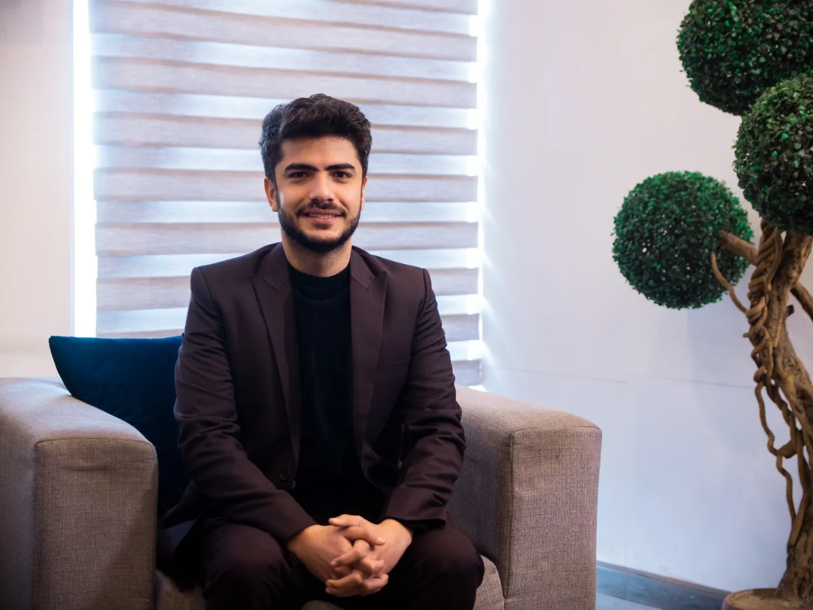
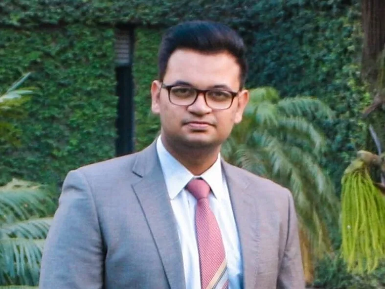
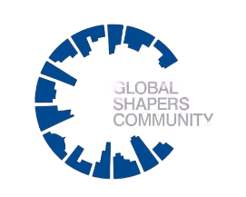
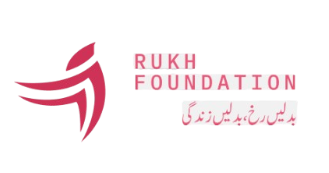
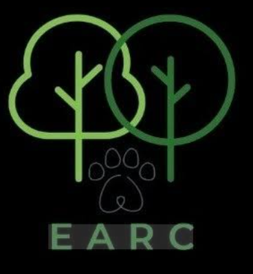
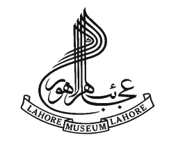
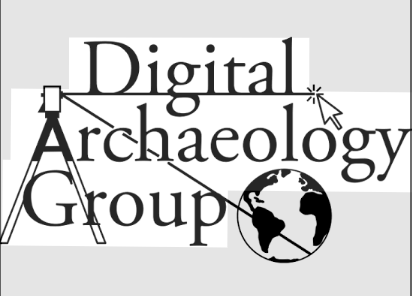

Founder · CEO
Mian Ahmad Farooq
Mian Ahmad Farooq is a Pakistani cultural heritage activist, lawyer, educator, and media personality known for his work in heritage awareness and community engagement.
Purpose · people · preservation
Making Pakistan’s heritage visible, understandable and worth protecting.

Our purpose
Direction
Bridge historical knowledge and public engagement through research, interpretation and shared experience.
A future in which Pakistan’s diverse heritage is visible, understood and carried forward with care.
People

Founder · CEO
Mian Ahmad Farooq is a Pakistani cultural heritage activist, lawyer, educator, and media personality known for his work in heritage awareness and community engagement.

Co-founder
Altamash, co-founder of a prominent tech startup, is an innovative entrepreneur, software engineer, and public speaker recognized for his contributions to technology education and fostering startup ecosystems.
How we work
Virsapur connects research, education and cultural experience so more people can encounter Pakistan’s heritage—and help protect it.

Work in practice

project
A multi-layered conservation project focused on historical landmarks, local craftsmen and sustainable urban tourism.
Explore
project
Creating accessible records and public-facing interpretation around places of cultural importance.
ExploreCollaborators

Global Shapers Community Rizq
Rizq Alkhidmat
Alkhidmat
Rukh Foundation
EARC
Lahore Museum Chughtai Public Library
Chughtai Public Library
Digital Archaeology GroupWork with Virsapur
For programmes, research, education and cultural collaboration.
Contact Virsapur